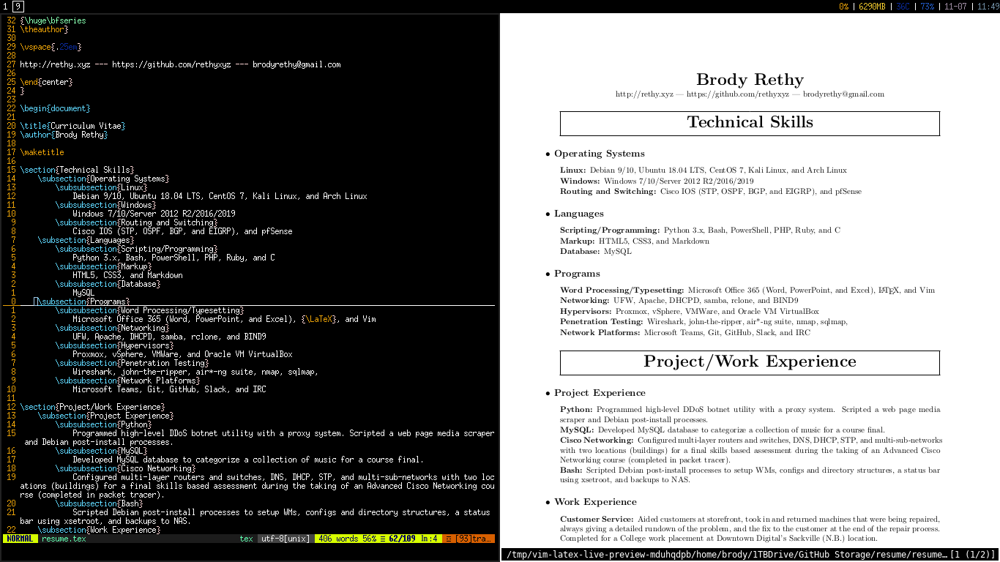
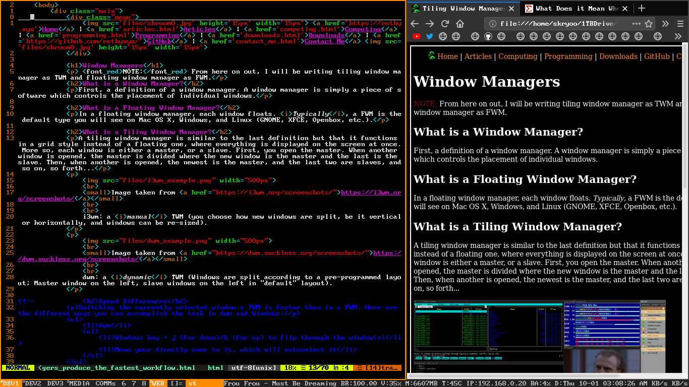

Window Managers
What is a Window Manager?
First, a definition of a window manager: A window manager is simply a piece of software which controls the placement of each window.
What is a Floating Window Manager?
In a floating window manager, each window floats (of course). Typically, a FWM is the default type you would see on Mac OS X, Windows, and Linux (GNOME, XFCE, Openbox, etc.).
What is a Tiling Window Manager?
A tiling window manager is similar to the last definition but that it functions in a sort of grid-like style instead of a floating one, where everything is displayed on the screen at once (no minimization available here, kids). More so, each window is either considered a master, or a slave. Only one master window is allowed at a time. First, you open a window which is automatically the master. When another window is opened, the master is divided in half, where the new window becomes the master and the last becomes a slave. Then, if another is opened, the newest is the master, and the last two are slaves, and so on, so forth... TWMs almost always also have a workspace system bound to the Modifier key (Windows key, usually) + 1 - 9. Pressing WinKey+1 will bring you to workspace 1, WinKey+2 will bring you to workspace 2, and so on... This is a big part of the TWM workflow.
i3wm
i3wm: a manual TWM (you choose how new windows are split, be it vertical or horizontally, and windows can be re-sized).
Image taken from https://i3wm.org/screenshots/

dwm
dwm: a dynamic TWM (windows are split automatically according to a predetermined layout; Master window on the left, slave windows on the right in the "default" layout).
Image taken from https://dwm.suckless.org/screenshots/

Here's an image of my setup while writing this webpage.
